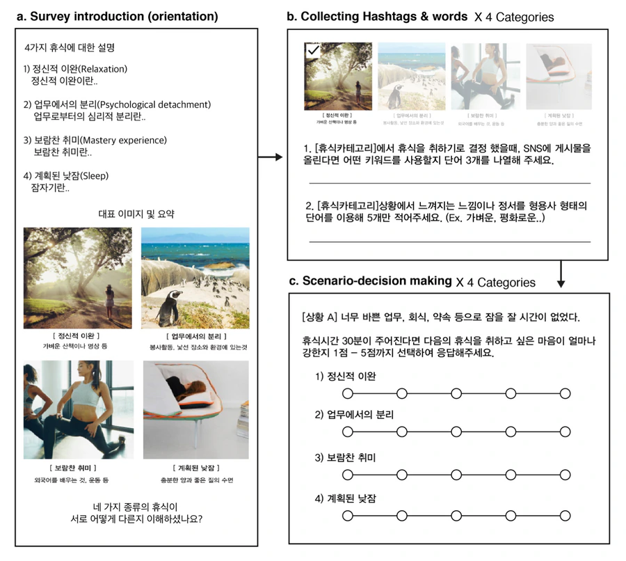
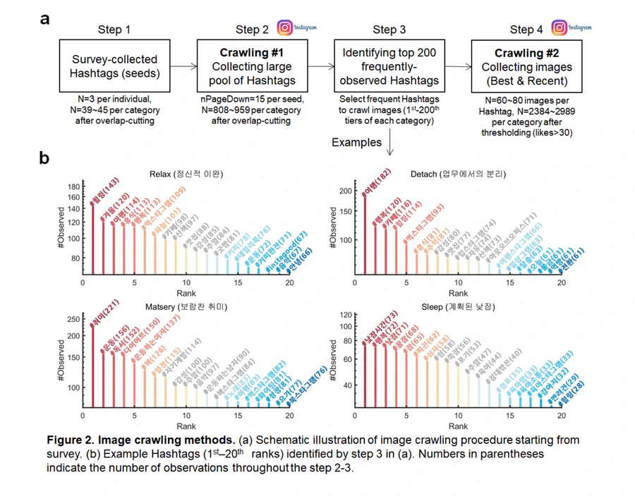
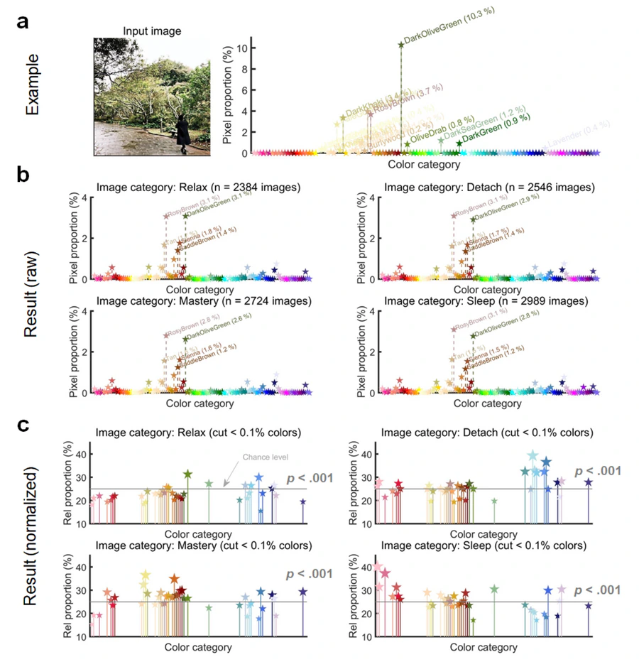
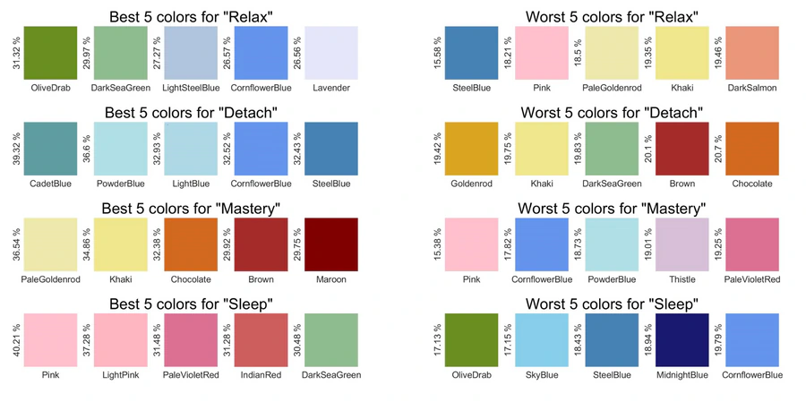
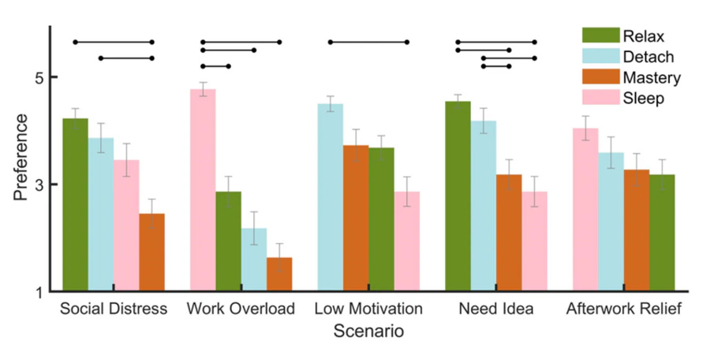
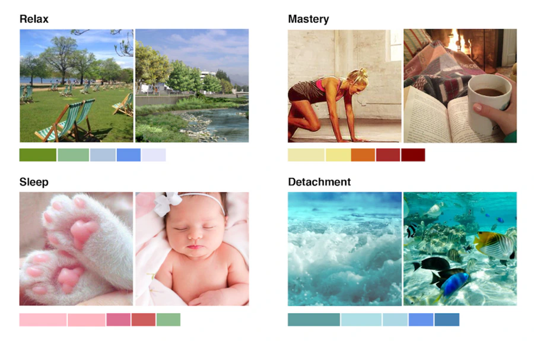

The goal of this study is to find the appropriate combinations of color for each type of recovery (Relaxation, Psychological Detachment, Mastery Experience, Sleep). Based on the findings, we came up with a method of designing a resting place.
Goal of the Experiment
Background and goals
Recovery can be conceptualized as the process that is opposite to the stress process because it reverses the negative consequences of job demands and allows an individual's functional system to return to the baseline level. One can restore physical and mental resources (e.g., energy and self-regulatory resources) during recovery (Meijman & Mulder, 1998). Previous studies divided recovery experiences into four types: ‘Relaxation’, ‘Psychological Detachment’, ‘Mastery Experience’, and ‘Sleep’ (Sonnentag, Binnewies, & Mojza, 2008). Even though ‘recovery’ can be achieved in many different places with various purposes, designs of rest places are somewhat homogeneous. In this study, we attempt to find the proper combination of colors to design a better resting place.
Experiment
Subjects / Participants
Twenty-four participants (58.3% female) were recruited. We did not ask their age. Instead, they described themselves as a graduate student (54.2%), an undergraduate student (37.5%), an office worker (4.2%), or unemployed (4.2%).
Stimuli / Materials
The primary purpose of the survey was to collect category-specific words for SNS searching. To improve the understanding of topics, representative images for each recovery category were provided (Figure 1a). To select the intuitive and well-representable picture, we conducted a design workshop with 5 professional visual designers. After searching images of each category on Pinterest (the preferred image-searching application among designers), we asked designers to choose the best one. Another design workshop with 3 experts was held to generate work-related stress scenarios (Figure 1c).

Figure 1. Survey procedure. Screen capture of (a) survey introduction page, (b) questionnaires for hashtags & words collecting, and (c) questionnaires for scenario decision-making task.
Measuring responses
To collect words, we asked participants to write down five different SNS keywords (Figure 1b). To measure the category-specific needs of rest, we used a 5-point Likert scale (Figure 1c).
Results
After collecting images from SNS keywords (hashtags), we analyzed the proportion of colors from the 10,643 images, each of which has high ‘like’ scores (more than 50 likes). Normalizing the pixel proportion and eliminating infrequently used colors (below 0.1%), we obtained a relative proportion of pixels within all categories (Figure 3c). Using this, we performed a Chi-square test with a null hypothesis that assumes each color has 25% of the relative proportion, indicating there is no difference of color combinations across the categories.

Figure 2. Image crawling methods. (a) Schematic illustration of the image crawling procedure starting from the survey. (b) Example hashtags (1st–20th ranks) identified by step 3 in (a). Numbers in parentheses indicate the number of observations throughout steps 2–3.

Figure 3. Result of image color-parsing. (a) Example color-parsing. (b) Result of color-parsing for each category. (c) Normalized result of color-parsing for each category — non-frequently used colors (below 0.1% of total) were eliminated.
First opinion: There was a clear difference between hashtags over the four categories. Therefore, we expected an accordingly different color palette for each rest type.
Statistical technique
The primary purpose of the statistical test was to find a difference in color proportions across categories. To do this, we extracted the color from every pixel of images of four different categories and performed Chi-square analysis to compare frequencies of colors. If there is no difference in color proportion, the expected value (chance level) of relative color proportion is 25%. We also used a non-parametric one-way repeated-measures ANOVA (Friedman test) on scenario decision-making tasks.

Figure 4. Combination of good (a) and bad (b) colors for each type of rest. Five colors that have the highest and lowest scores, respectively, were selected.
Statistical results
From the normalized result of color-parsing (Figure 3c), we performed a Chi-square test. For all the categories, we found a significant difference of color proportions against the chance level of 25% (Relax: χ²(38) = 1176.04, p < 0.001; Detachment: χ²(38) = 923.44, p < 0.001; Mastery: χ²(38) = 945.08, p < 0.001; Sleep: χ²(38) = 978.00, p < 0.001). The best and worst five colors for each category are summarized in Figure 4.
Next, we performed a Friedman test for each scenario. Except ‘After-work relief’ (χ²(38) = 4.89, p = 0.18), there was a statistically significant main effect of rest type on preferences, χ²(3)s > 16.76, ps < .001. Post-hoc Bonferroni tests also revealed significant differences between rest types (Figure 5).

Figure 5. Preferred type of rest. Black dot-headed bars indicate significant differences between preference scores (p < .05; Bonferroni multiple comparisons after Friedman's test).
Findings

Figure 6. Best images that represent a color palette. The pictures match the proportion of the color palette of each category.
Major findings
The main finding of this study is that different color combinations fit different categories of rest. Secondly, we also found people's needs for rest are dependent on the situation. Combining the results, our finding suggests that the design of a place to rest can be improved by considering the different needs of rest and matching colors accordingly.
Additionally, we picked two representative images (Figure 6), based on the top 5 color palettes. We asked five graphic designers to select two pictures that are most suited for each category. The most frequently used colors of the ‘Relax’ category are divided into two groups: green (olive drab, dark sea green) and blue (light steel blue, cornflower blue, lavender). These colors may reflect the daytime of an urban park area — green from trees and grass, cornflower blue from the river or sky, lavender and light steel blue from low-contrast clouds, city buildings, roads, and other man-made objects.
The color palette associated with the ‘Detachment’ category consisted of blue colors. Unlike the blue-gray colors of the Relax category, these blues are warmer and greenish. Cadet blue and steel blue come from images of deep, warm oceans; powder blue and light blue come from the surface of water and clear skies.
The color palette of the ‘Mastery’ category consisted of bright yellow to dark red colors. As many people study in a cozy cafe or library, colors associated with fire and light bulbs are dominant. There were many images of people wearing revealing sportswear for working out — people who enjoy exercise regularly tend to have tanned skin, which contributed reddish-brown colors to the palette.
Interestingly, the color palette for the ‘Sleep’ category consists of mainly pink. On Instagram, people tend to upload pictures of their pets and babies when they're napping. People seem to feel relaxed seeing a napping kitten's pink jelly and fuzzy fur. Baby pictures are pinkish because of their soft, rosy skin. Also, there were many pictures of soft, pink blankets.
Supported hypotheses
Hypothesis 1: Depending on rest types, people prefer different colors. Hypothesis 2: Needs for rest differ depending on the work situation.
Summary of the study
Through SNS big-data crawling, we identified the difference of cognition shared by people across the four categories of recovery: Relax — greenish and bluish; Detachment — bluish; Mastery experience — dark reddish and bright yellowish; Sleep — pinkish. Through scenario decision-making tasks, we also identified heterogeneous needs of recovery based on the stress-related situations people experience in everyday life. Our results not only provide valuable insight into the psychological architecture of ‘recovery’ represented in our cognitive system but also suggest empirical findings that would aid designers in creating resting areas in the workplace.
References
- Kamaruzzaman, N. & Marinie, E. (2010). Influence of employees' perception of colour preferences on productivity in Malaysia office buildings. Journal of Sustainable Development, 3(3), 283–287.
- Meijman, T. F., & Mulder, G. (1998). Psychological aspects of workload. Handbook of Work and Organizational Psychology, 2.
- O'Brien, S. (2007). Color Theory. Journal of Business Mexico, 6(2), 20–22.
- Sonnentag, S., Binnewies, C., & Mojza, E. J. (2008). “Did you have a nice evening?” A day-level study on recovery experiences, sleep, and affect. Journal of Applied Psychology, 93(3), 674–684.